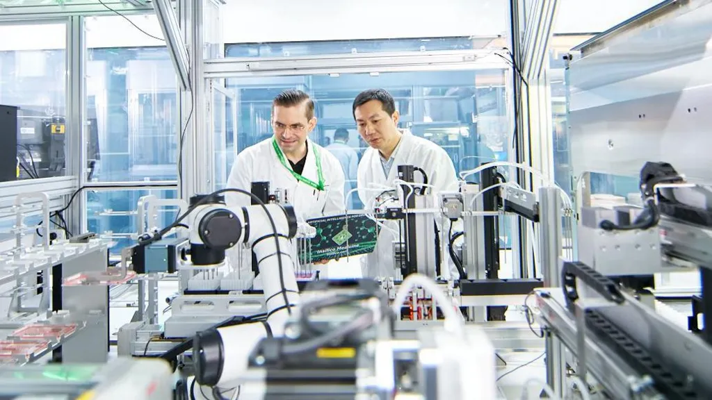
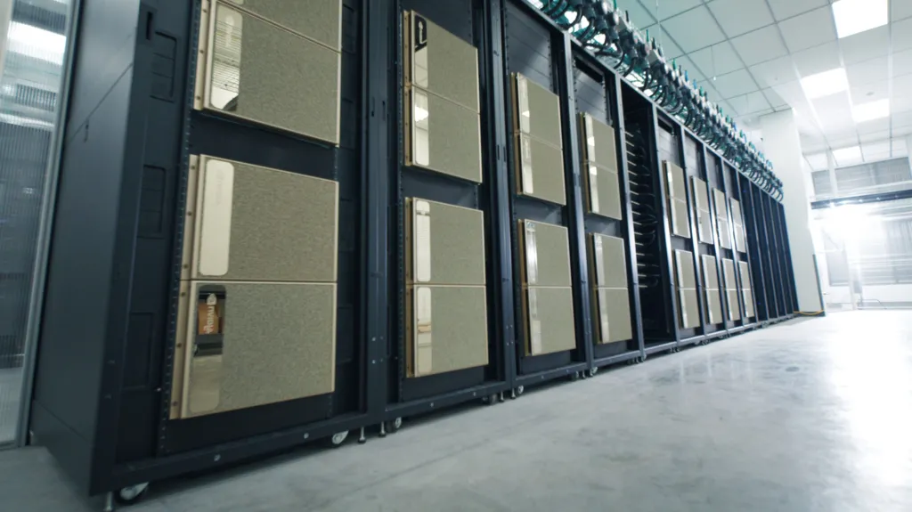

How AI uncovers new ways to tackle difficult diseases
This is the fourth feature in a six-part series that is looking at how AI is changing medical research and treatments.
Over a video call, Alex Zhavoronkov holds up a small, green, diamond-shaped pill.
It has been developed by his company to treat a rare progressive lung disease for which there is no known cause or cure.
The new drug has yet to be approved, but in small clinical trials has shown impressive efficacy in treating idiopathic pulmonary fibrosis (IPF).
It's one of a new wave of drugs where artificial intelligence (AI) has been integral to its discovery.
We can't say we have the first AI discovered and designed molecule approved,
says Dr Zhavoronkov, the co-founder and CEO of US-based start-up Insilico Medicine. But we may be the furthest along the path.
Welcome to the great AI drug race, where a host of companies are employing the power of AI to do what has traditionally been the job of medicinal chemists.
That includes both smaller, specialist AI-driven biotech companies, which have sprung up over the past decade, and larger pharmaceutical firms who are either doing the research themselves, or in partnership with smaller firms.
Among the newer players is Alphabet, the parent company of Google, which launched UK-based AI drug discovery company Isomorphic Labs, in late 2021.
Its CEO, Demis Hassabis, shared this year's Nobel prize in chemistry for an AI model that is expected to be useful for AI drug design.
Using AI to do drug discovery could make an enormous difference
for patients, says Chris Meier, of the Boston Consulting Group (BCG).
Bringing a new drug to market takes on average 10 to 15 years, and costs more than $2bn (£1.6bn).
It's also risky: about 90% of drugs that go into clinical trials fail. The hope is that using AI for the drug discovery part of that process could cut the time and cost, and result in more success.
A new era, where AI is at the centre of the drug discovery process is emerging, says Charlotte Deane, a professor of structural bioinformatics at Oxford University, who develops freely available AI tools to help pharmaceutical companies and others improve their drug discovery.
We are at the beginning of just how good that might be,
she says.
It is unlikely to lead to fewer pharmaceutical scientists, say experts - the real savings will come if there are fewer failures - but it will mean working in partnership with AI.
A recently published analysis by BCG found at least 75 "AI-discovered molecules" have entered clinical trials with many more expected.
"That they are now routinely going into clinical trials is a major milestone," says Dr Meier. The next – and "even bigger milestone" – will be when they start to come out the other end.
However, Prof Deane notes that there is no definition yet of what exactly counts as an "AI discovered" drug and, in all the examples to date, there has still been lots of human involvement.
There are two steps within the drug discovery process where AI is being most heavily deployed explains Dr Meier.
The first is in identifying, at the molecular level, the therapeutic target that it is intended the drug will act to correct, such as a certain gene or protein being altered by the disease in a way it shouldn't.
While traditionally scientists test potential targets in the lab experimentally, based on what they understand of a disease, AI can be trained to mine large databases to make connections between the underlying molecular biology and the disease and make suggestions.
The second, and more common, is in designing the drug to correct the target.
This employs generative AI, also the basis of ChatGPT, to imagine molecules that might bind to the target and work, replacing the expensive manual process of chemists synthesising many hundreds of variations of the same molecule and trying them to find the optimal one.
AI and Medicine
Insilico Medicine, founded in 2014 and which has received more than $425m in funding, used AI for both steps, as well as to predict the probability of success in clinical trials which it then feeds back into its drug discovery work.
Currently the firm has six molecules in clinical trials, including to treat IPF for which the next phase of trials is being planned.
In addition four molecules have been cleared to enter trials, and nearly 30 others are showing promise.
All have been "discovered from scratch using generative AI", says Dr Zhavoronkov. "Our machines dream until they come up with a perfect drug that fits all our criteria."
The novel molecule to treat IPF was designed by the company's generative AI software after it was given the objective of inhibiting a protein called TNIK, which has never been targeted before for treating IPF, but was suggested by another set of the company's AI software as the most likely regulator of the disease.
Possibilities suggested by the system were then synthesised and tested.
The discovery process was far quicker and leaner than standard for the industry, notes Dr Zhavoronkov.
It took 18 months and required synthesis and testing of 79 molecules, where usually it would be expected to take about four years and at least the synthesis of 500. Other of Insilco's molecules have even lower numbers, he says.
The lack of data from which AI can learn remains the biggest challenge for the field generally, say experts.
That cuts across both target identification and molecule design, and can potentially introduce biases.
US-based Recursion Pharmaceuticals says its approach mitigates the problems of limited data.
Through automated experiments, it generates massive quantities of data related to the entire collection of molecules that makes up the human body. It then trains AI tools to understand that data and find unexpected relationships.
To help to do that,last year it installed what it says is the fastest supercomputer owned and operated by any pharmaceutical company.
It has had some success. A molecule developed by the company to treat both lymphoma and solid tumours is now being tested on cancer patients in early-stage clinical trials.
It was developed after the AI spotted a new way of targeting a gene which is thought to be important in driving these cancers, but which nobody had previously cracked how to target on its own.
Recursion co-founder and CEO Chris Gibson says what matters most in the field is something neither Recursion nor anyone else has yet shown: that these AI-discovered molecules can make it through clinical trials and that, over time, they deliver an increased probability of success over traditional methods.
When that happens, says Dr Gibson, "it'll be obvious to the world that this is the way to go".